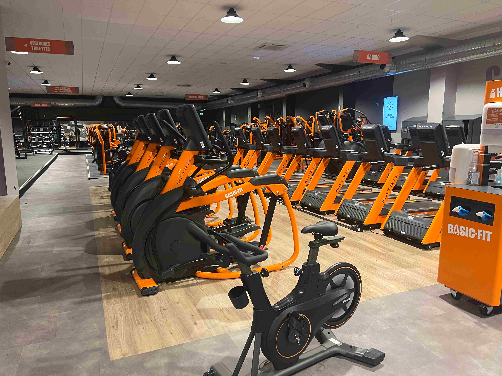
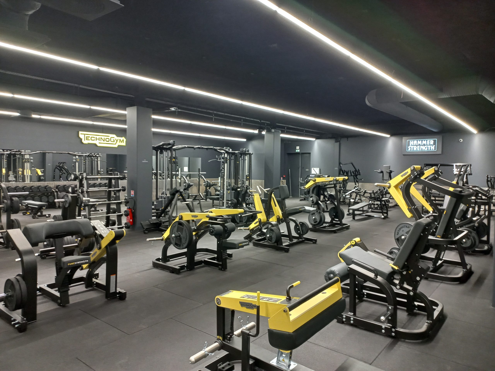

Basic-Fit

À propos de Basic-Fit Du fitness illimité, à partir de 19,99€ par période de 4 semaines. Choisissez parmi plus de 1400 clubs Basic-Fit en Europe !
Les Avantages
- Des tarifs très attractifs pour une pratique régulière du sport
- Une accessibilité internationale avec un accès aux clubs Basic Fit en Europe
- Des espaces dédiés au cardio-training et à la musculation
- La possibilité de bénéficier de services complémentaires en option
- Un programme de fidélité récompensant les adhérents assidus
Les Inconvénients
- Manque de personnel ce qui peut entraîner des problèmes d’assistance et de conseil pour les clients.
- Services ilimités Basic Fit ne proposent pas de services tels que les saunas, les hammams ou les piscines. Cela peut être un inconvénient pour les clients qui recherchent une expérience de bien-être complète.
- Un réseau inégal La qualité des salles varie grandement d’un quartier à l’autre.
- Le manque d’équipement musculation dans beaucoup de salles, il n’y a pas assez de machines pour le bas du corps. Dans certaines salles, elles sont même absentes !
- Prolémes de douches récurrent
Fitness Park

Musculation, Cardio, Cross-Training & Boxe en Accès Illimité
Les Avantages
- Un accès illimité à tous les clubs Fitness Park en France
- Des horaires élargis avec une ouverture de 6h à 23h, 7j/7
- Une multitude d’activités et de cours collectifs disponibles
- Un coaching personnalisé pour un suivi optimal
- Un espace détente et bien-être avec sauna et hammam dans certains clubs
Les Inconvénients
- L'absence de sauna et de hammam dans la salle de sport.
- De plus, l'application mobile, bien qu'elle offre des avantages intéressants, peut parfois être peu intuitive à utiliser.
- La salle étant ouverte 24/7, cela peut poser des problèmes aux voisins qui sont dérangés par le bruit dans les horaires les plus tardifs.